Astro X · CX 전략 연구
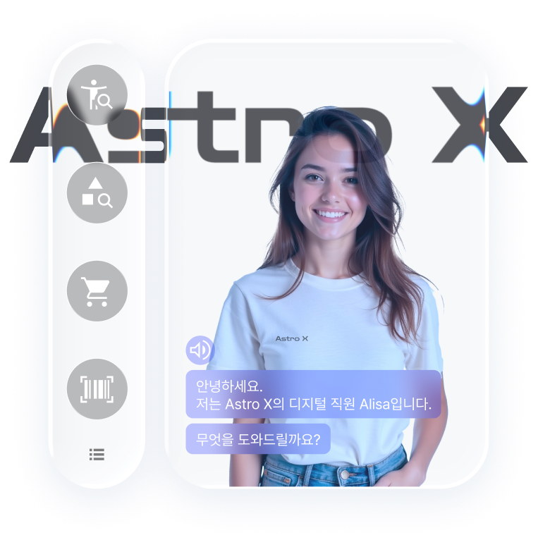
Overview
리테일 매장 내 디지털 휴먼을 활용한 리테일 산업의 피지털 전략을 수립하고, 가상성 및 기술 상호작용성 수준에 따른 고객 경험의 변화를 분석하였습니다. 이를 바탕으로 4가지 피지털 경험 요인에 따른 서비스 설계 방향과 디지털 휴먼 페르소나 전략을 제안하였습니다.
Project Goal
최근 리테일 산업은 오프라인과 디지털 환경이 통합된 피지털(Phygital) 경험의 중요성이 대두되고 있습니다. 그 중에서도 디지털 휴먼은 소통, 감정적 연결을 통해 피지털 환경에서 원활한 쇼핑 경험을 제공하는 수단이 될 수 있습니다. 이러한 배경에서 본 프로젝트는 디지털 휴먼이 제공할 수 있는 4가지 서비스 유형이 고객 경험에 미치는 영향에 집중하여 구체적인 디지털 휴먼 서비스 및 페르소나 전략 설계 방안을 제시하는 것을 목적으로 합니다.
What (Phygital Experience)
효율·품질 / 오락·심미 / 윤리·명성 / 사회·관계의 4가지 소비 가치를 중심으로 피지털 경험 요인을 정의합니다.
How (Design)
현실적 외형(가상성 저)부터 독창적 세계관(가상성 고)까지 가상성 수준에 따라 차별화된 디지털 휴먼 페르소나를 설계합니다.
How (Touchpoints)
Kiosk / Smart Phone 등 상호작용성 저 터치포인트부터 AR·MR Glasses / HMD 등 상호작용성 고 터치포인트까지 설계합니다.
Desk Research & Case Study
이론적 고찰과 리테일 피지털 전략 사례 분석을 통해 디지털 휴먼이 제공할 수 있는 주요 서비스 유형을 네 가지로 정의하였습니다.
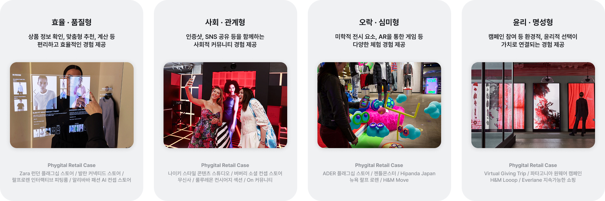
Desk Research & Case Study
디지털 휴먼의 대표적인 특성인 '가상성'을 기준으로 문헌 및 사례 분석을 진행, 가상 브랜드 Astro X의 디지털 휴먼 페르소나를 도출하였습니다.
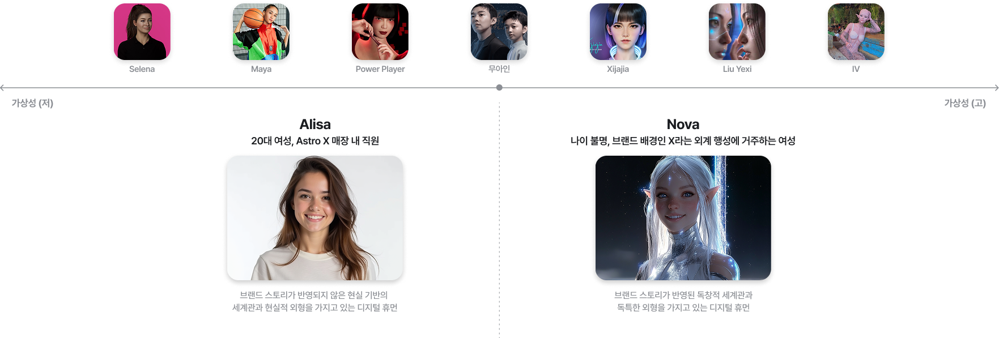
Desk Research & Case Study
소비자에게 실질적이고 효과적인 경험을 제공할 수 있는 적절한 기술을 선택하기 위해 디지털 기술을 '상호작용성' 관점에서 유형화하여 터치포인트를 정의하였습니다.
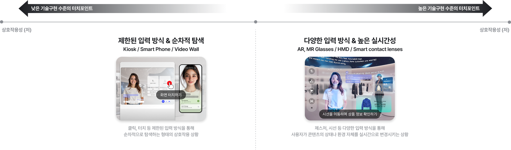
Research Hypothesis
디지털 휴먼이 피지털 환경에서 고객 경험에 미치는 영향을 확인하고, 가상성과 상호작용성이 이 관계에 어떻게 작용하는지 살펴보기 위해 가설을 설정하였습니다.
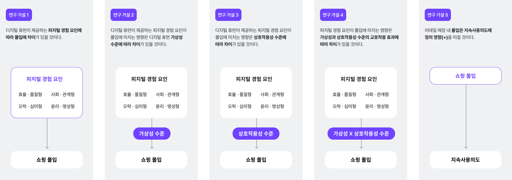
User Survey
가설을 검증하기 위해 총 16개의 실험 자극물을 제작하였습니다. 실험물에 활용된 디지털 휴먼 및 매장 이미지는 AI를 활용해 모두 가상으로 제작하였으며, 피험자가 1인칭 시점에서 시나리오를 간접적으로 경험할 수 있는 프로토타입 형태로 구성하였습니다.
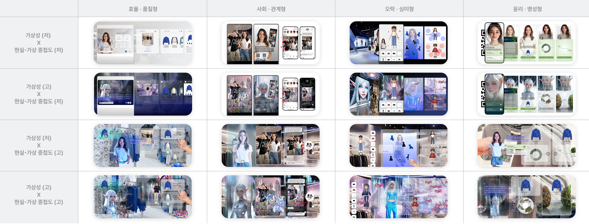
User Survey
온라인 설문 결과를 바탕으로 통계 분석을 진행한 결과, 제안한 5개 연구 가설 중 4개가 최종 채택되었습니다.
조사 대상: Z세대 214명 (2024.10.10–12.14) · 분석방법: 삼원분산분석(3-Way ANOVA), SPSS 29.0
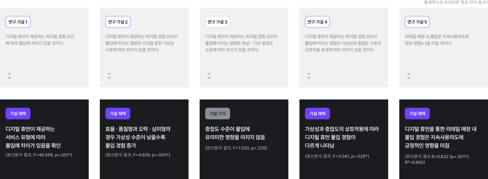
Data Analysis
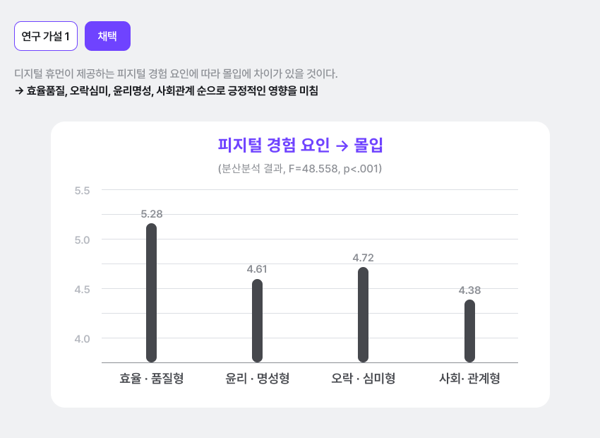
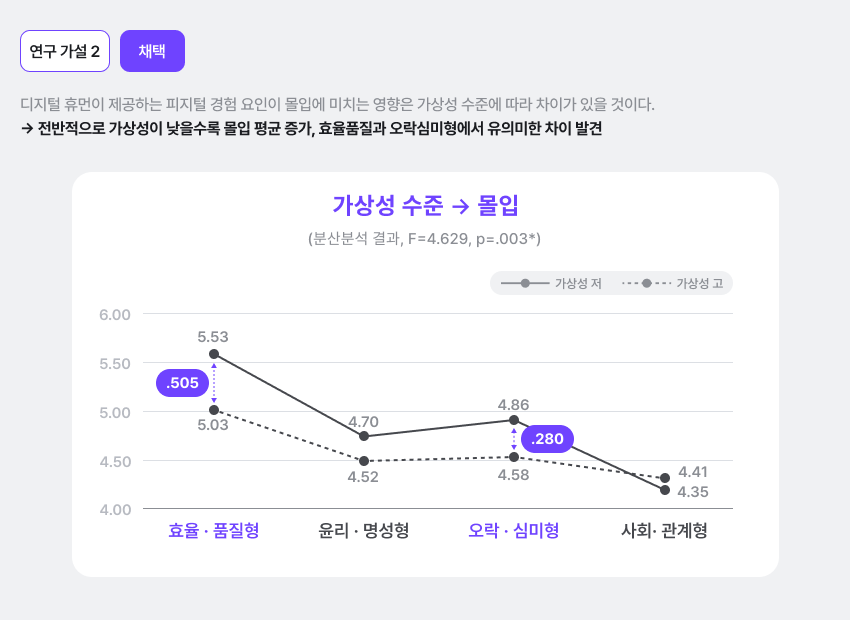
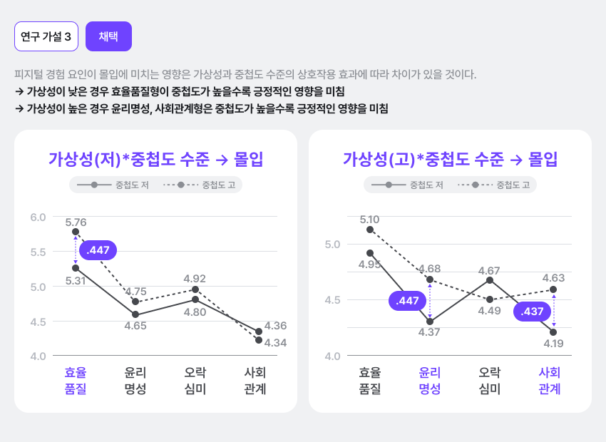
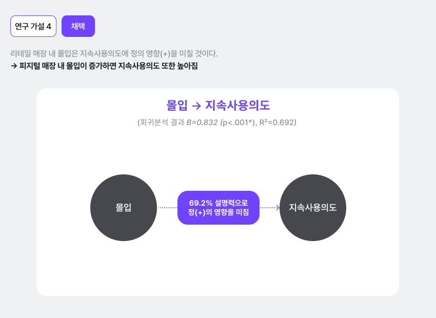
Service Strategy
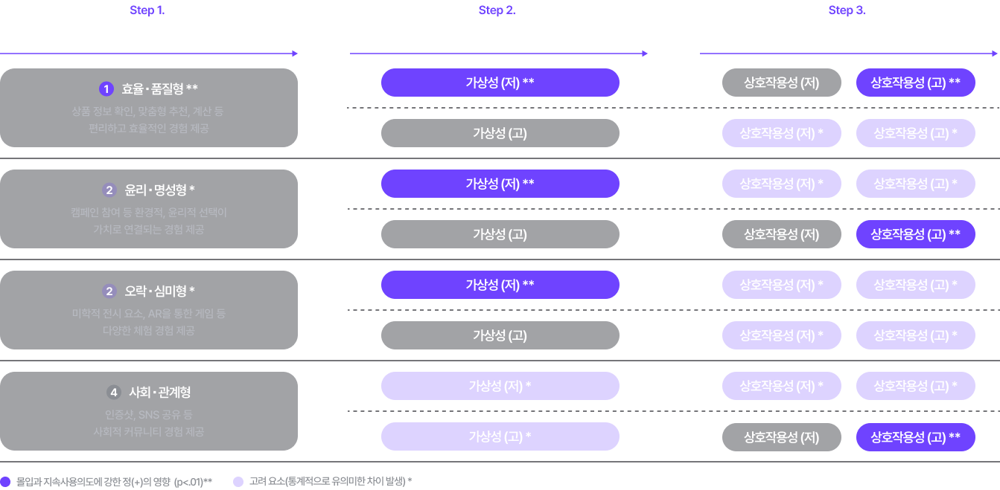
Strategy Framework
피지털 경험 요인 → 세부 서비스 → 디지털 휴먼 페르소나 → 상호작용성 위계로 구성된 프레임워크를 통해 전략적 설계 방향을 제시합니다.
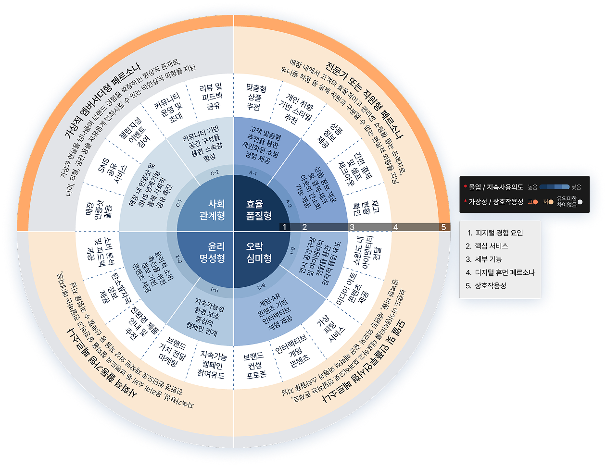
User Scenario
쇼핑 여정을 Pre-Service · During-Service · Post-Service 세 단계로 구성하여, AI 디지털 휴먼이 실제 접점에서 어떻게 구현되는지 시나리오로 제시하였습니다.
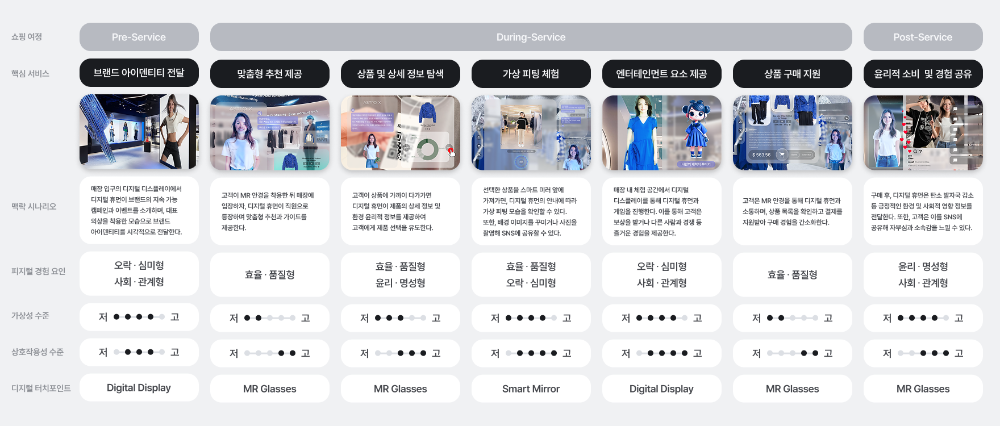
Retrospective
이번 연구를 통해 디지털 휴먼 전략 설계에서 기술 수준보다 콘텐츠와 소비 가치 맥락이 먼저임을 확인했습니다. 중첩도(기술 구현 수준)가 몰입에 유의미한 영향을 미치지 않았다는 결과는, 피지털 기술 도입을 우선하는 것이 아니라 브랜드가 전달하려는 경험 요인과 디지털 휴먼의 가상성 수준을 먼저 결정해야 한다는 설계 원칙을 시사합니다.
디지털 휴먼이 단순한 시각적 효과가 아니라 브랜드 가치를 연결하는 경험 매개체가 될 때, 고객 몰입과 지속사용의도 모두에 긍정적 영향을 미칩니다. AI 기반 디지털 휴먼이 보편화되는 시점에서, 어떤 소비 가치를 어떤 페르소나로 구현할 것인가에 대한 설계 언어가 필요하다고 생각합니다.